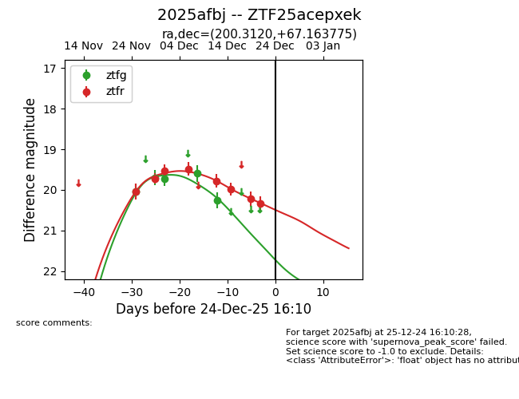
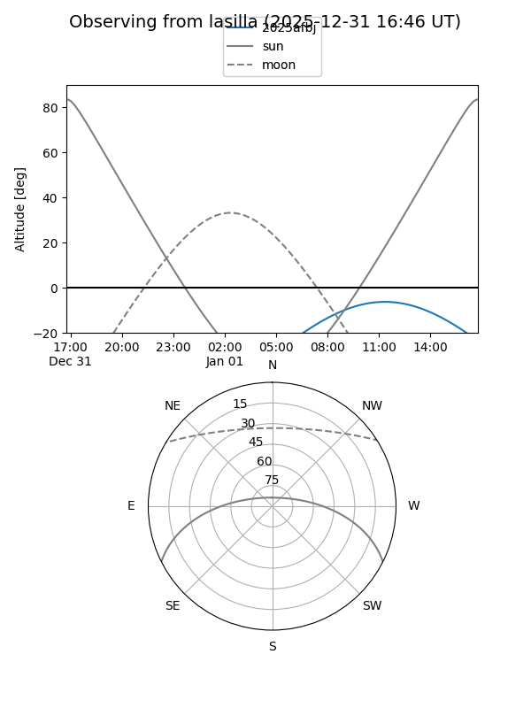
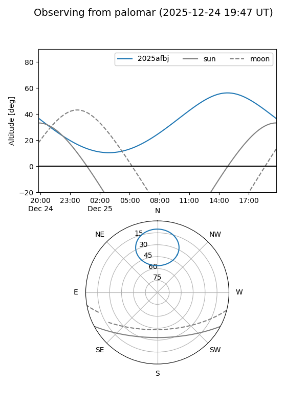
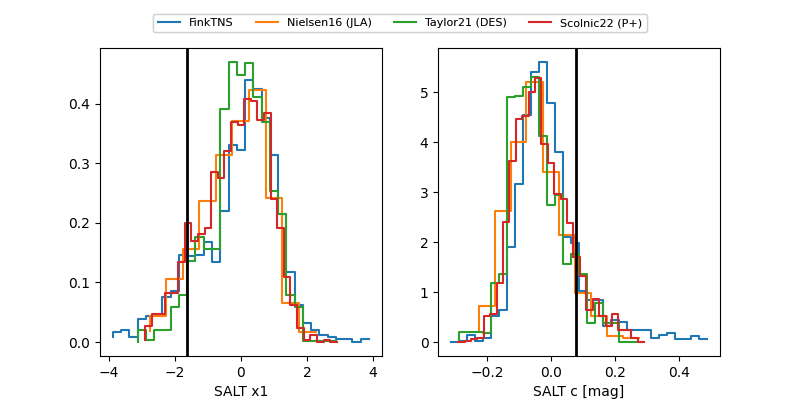

2025afbj
Target 2025afbj at 2025-12-21 14:32
Aliases and brokers:
FINK: fink-portal.org/ZTF25acepxek
Lasair: lasair-ztf.lsst.ac.uk/objects/ZTF25acepxek
ALeRCE: alerce.online/object/ZTF25acepxek
TNS: wis-tns.org/object/2025afbj
YSE: ziggy.ucolick.org/yse/transient_detail/2025afbj
alt names
ZTF25acepxek (ztf,fink_ztf)
2025afbj (tns,yse)
Coordinates:
equatorial (ra, dec) = 200.3120,+67.16378
equatorial (HMS+DMS) = 13:21:14.89,+67:09:49.59
galactic (l, b) = (118.4677,+49.70529)
Flags:
Photometry:
last ztfg=20.26, ztfr=20.34
5 ztfg, 8 ztfr detections
Lightcurve

Visibility


Additional plots
